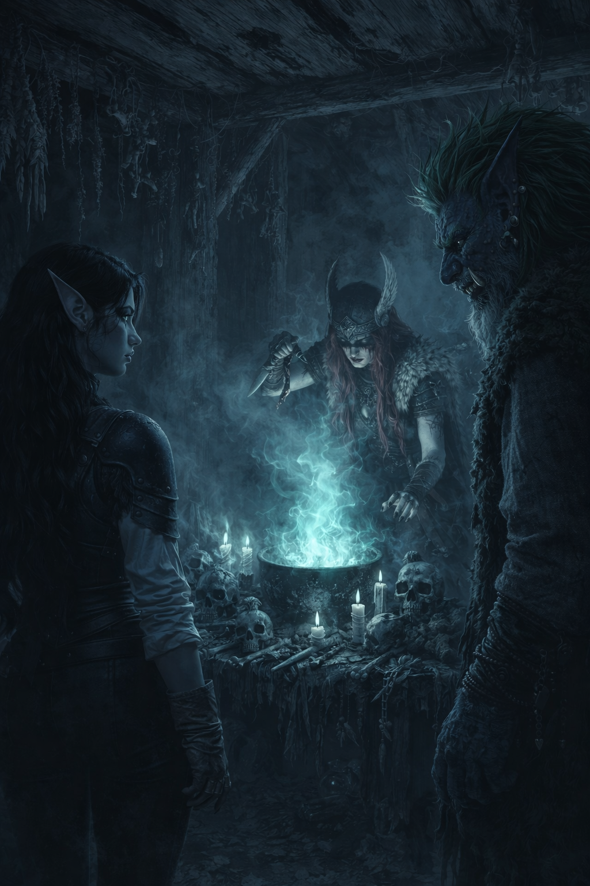
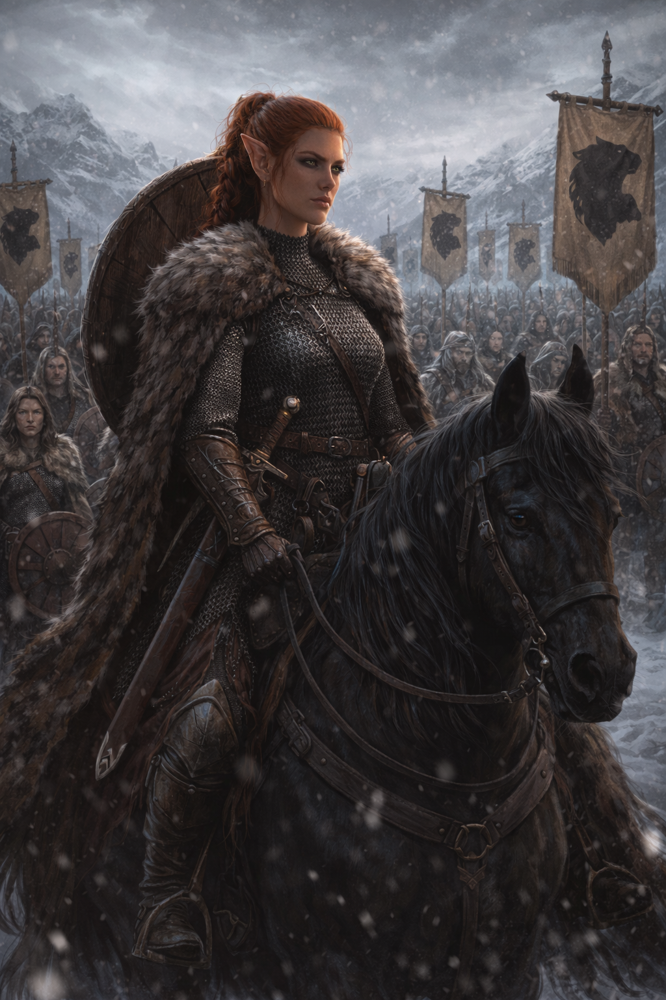
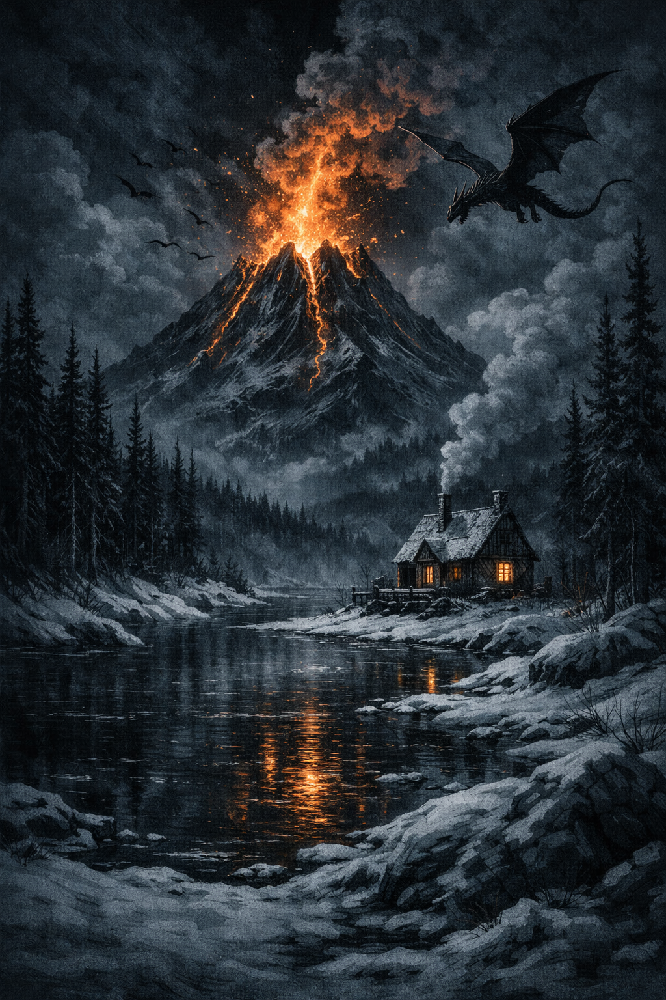
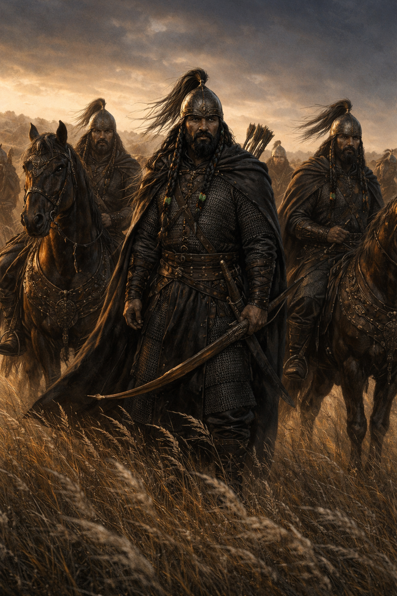

МОРРЕНОР
Трещины мира
Ещё недавно Морренор был объединён под властью Империи Второго Солнца. Теперь она медленно распадается: регионы обретают независимость, старые порядки рушатся, а мир погружается в нестабильность. На фоне политического кризиса усиливаются странные явления — древние культы, забытые знания и символы, такие как змей, пожирающий солнце, намекают на события, выходящие за пределы обычной реальности. Судьбы людей и народов переплетаются с этими изменениями. Морренор — это мир, где каждый выбор может повлиять на исход грядущих событий.
С чего начать?
Главные герои


Зен Джа инстинктивно шагнул ближе к эльфийке, загораживая её плечом. — Рин, не смотреть вниз, — прошептал он. — Не смотреть. В первой капле она увидела себя в Аэрун Даре — окровавленную, с безумными горящими глазами, с мечом, который поднимался и опускался снова и снова. Её рот был широко открыт в беззвучном крике — не боли и не ярости, а чистого, животного наслаждения. Она резко дёрнулась, пытаясь отвернуться, но взгляд уже прилип. Во второй капле была другая она. Та, из старого сарая у дороги на Лирвенд. Девушка с палкой, в которую был вбит длинный ржавый гвоздь. Она методично разбивала черепа, вдавливала грудные клетки, слушала, как хрустят рёбра. Именно там, в том сарае, среди криков и запаха крови, впервые родилось её прозвище. «Тёмное сердце».